エジプト
| 日付 | 2007年9月10日（月） - 2007年9月17日（月） |
|---|---|
| メンバー | 友人（男2） |
6日目
5:30 カイロの終着駅に到着。
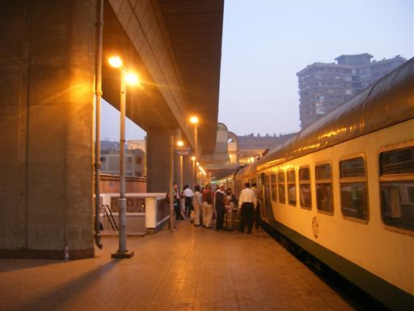
バスの車内から見る夜明け。
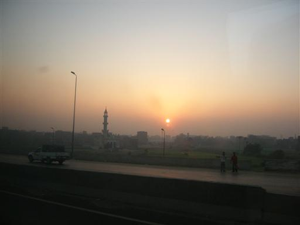
カイロ市街の向こうにはピラミッドの頭が見える。
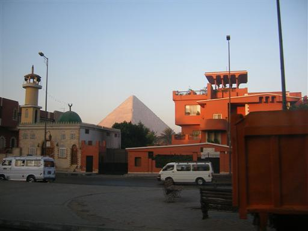
バスでカイロからアレキサンドリアに向かう。
車道の脇には塩田が広がる。
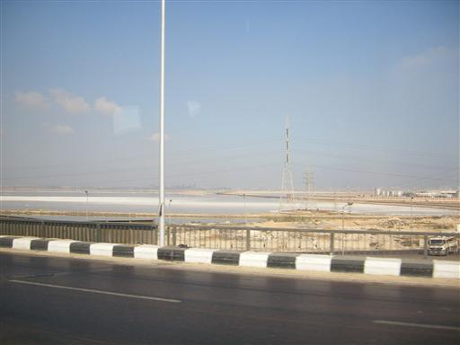
エジプト第2の都市・アレキサンドリアに到着。
エジプトの中では比較的きれいな街。
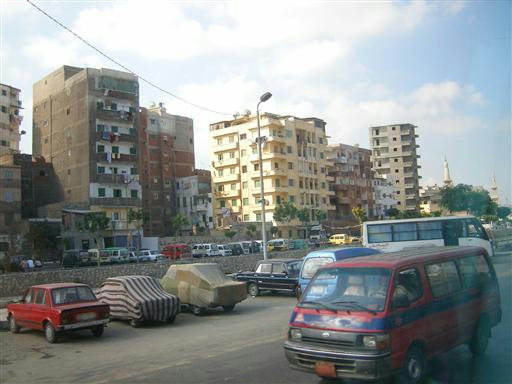
市内には路面電車が走っている。
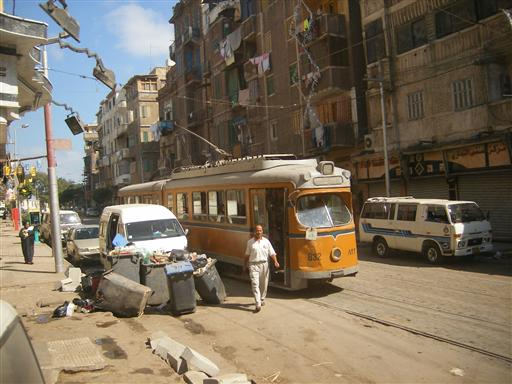
ポンペイの柱。ローマ帝国時代の図書館の柱の1本。
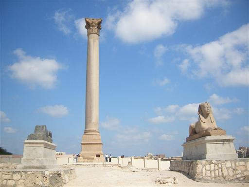
高さは約27m。昔はたくさんの柱が立っていたそうだが、
今は1本だけポツリと立っている。
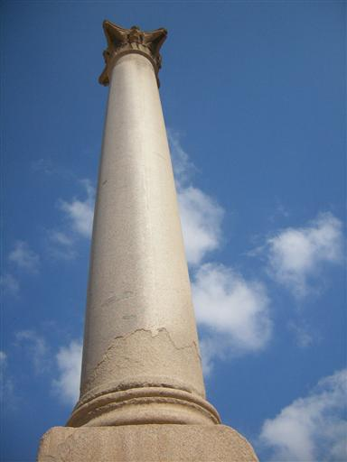
アレキサンドリア国立博物館に行く。
比較的新しい博物館。
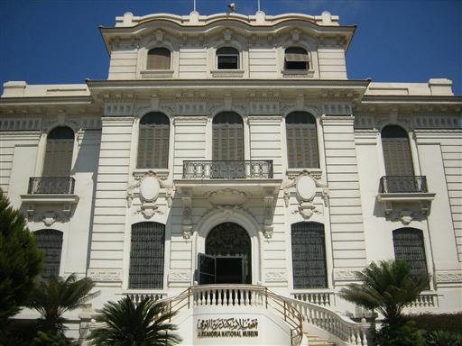
地震で海底に沈んだプトレマイオス朝時代のコインや装飾品が展示されている。
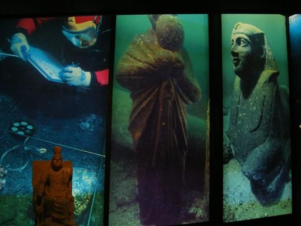
古代エジプトの不思議な形をした像。
同類のものは他にもたくさんある。
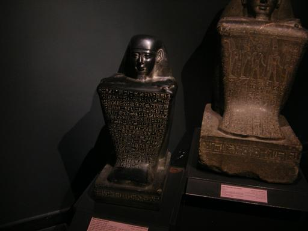
メデゥーサのフレスコ画。
髪は蛇、見たものを石に変える。

海の見えるレストランで昼食。
初めて見る地中海。海風が心地よい。
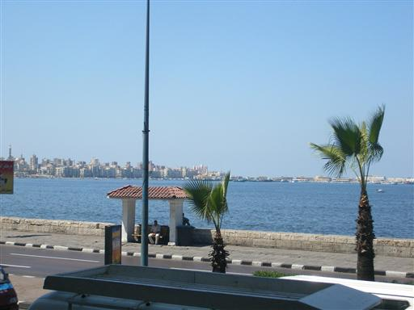
カイロに帰還。ペンダントなどを扱う土産物屋に立ち寄る。

本日宿泊するセミラミスホテルに到着。
最高級ホテルで、ロビー・部屋ともきれいで非常に広い。
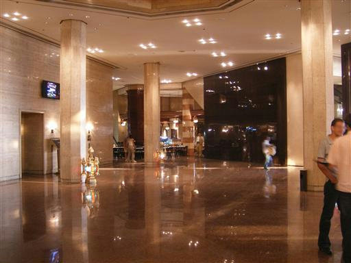
カイロ市街に夕日が沈む。
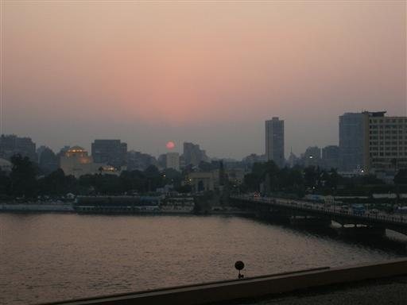
夕食をとりにカイロ市街に出かける。
道中で出会ったカナダ人に教えてもらったアラベスクという高級レストランに行く。
ここのエジプト料理は非常においしかった。一人15$。
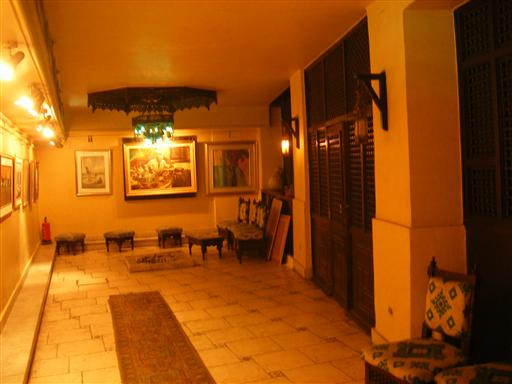
ホテルの部屋から望むカイロの夜景。
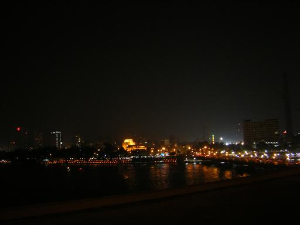